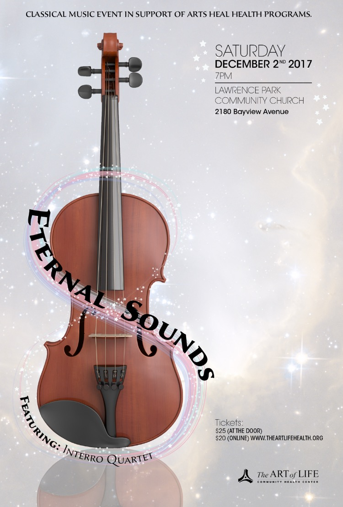

Join us on a delightful journey of the eternal sounds of music through the ages, performed in the exhilirating style of the Interro Quartert!
Our 3rd annual youth-for-youth charitable event features performance by Interro Quartet, Arts Bazar, and Baking Contest for youth. Fun journey of music through the ages for adults and youth alike! With selections from Haydn, Mendelssohn, Dvořák, Tchaikovsky, and Richardson-Schulte.
During intermission, we welcome youth to interact with the performers!
Sponsorship opportunities available 416.449.6747


 In Support of ARTS HEAL HEALTH Programs
In Support of ARTS HEAL HEALTH Programs